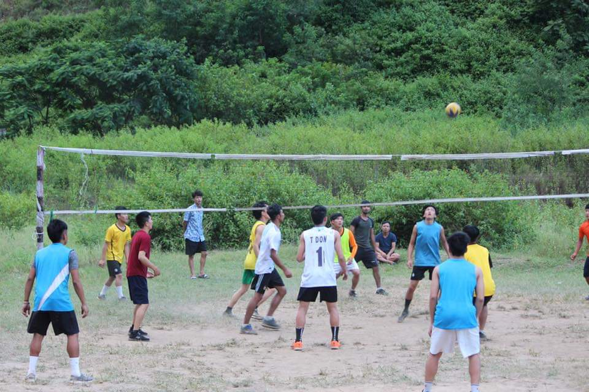
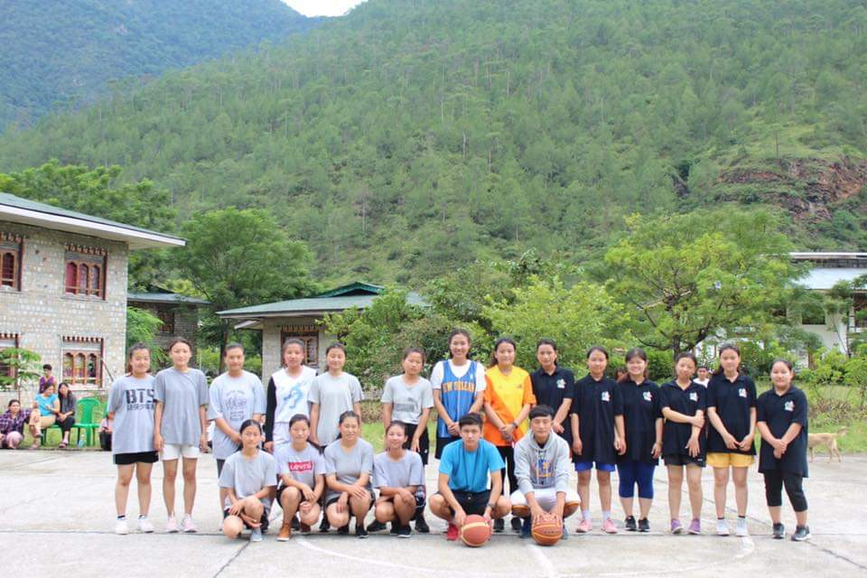
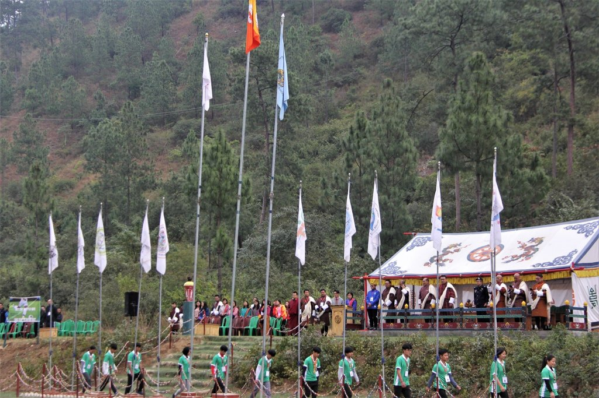
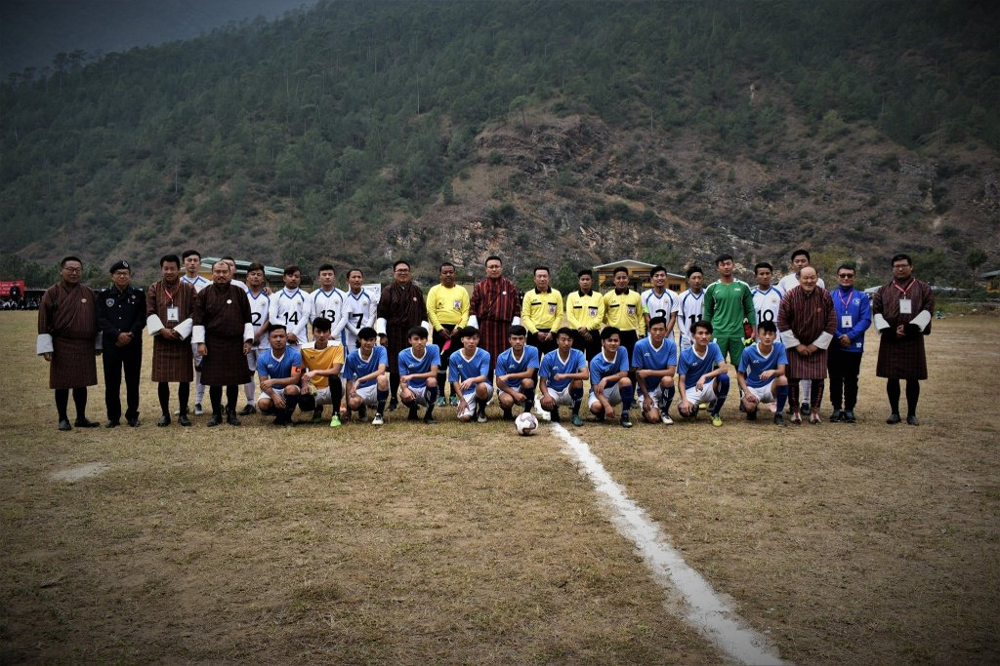
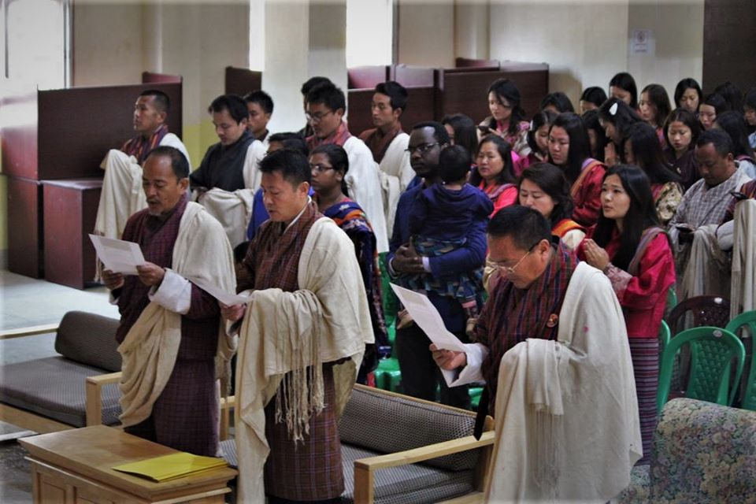
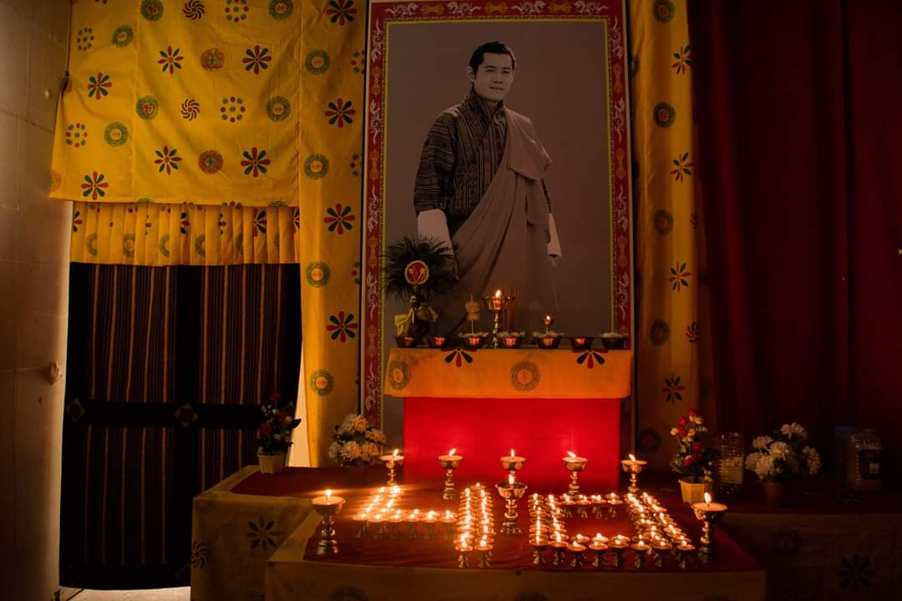
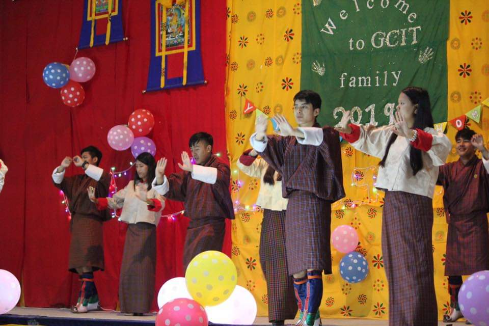
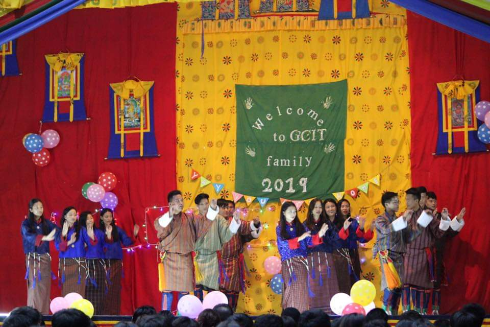

GCIT Events
GCIT marks the Foudation Day every year. 2nd Foundation Day was marked on 1st November, commemorating the 11th Cornoation day of His Majesty the king in presence of His Eminence Lhalung Sungtrul Rinpoche. Coincidng with foundation day fate day was also held for two days. Foundation Day is indeed a memorable day for everyone of us.
In the begining of Autumn Semseter Games Competition is held among GCIT students and staffs. It is an opportiunity for us to showcase our talents and also we can interact with seniors.
 GCIT hosted the 6th winter University games known as BHUTAN UNIVERSITY SPORTS FEDERATION GAMES(BUSF)
 Every year on 11thNovember the nation joins together to celebrate the Birth Anniversary of His Majesty the 5thDruk Gyalpo. On this auspicious day GCIT family gathers to recite 5thDruk Gyalpo's Zhabten and also offers butter lamps. Then followed by cultrual dances by the scholars of GCIT.
 For the warm welcome of fresher students, welcome show is conducted in the beginning of fall semester. To thank senior students, return show is held by freshers after few weeks.
 The annual ritual of Gyalpozhing College is conducted every year for the benefit of all the living beings and especisally to protect the family of GCIT.